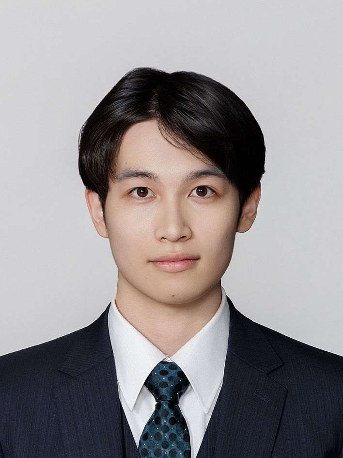

FEATURED WORKS
代表作
特に力を入れた作品です。詳細ページで、担当した実装と工夫を紹介しています。
OTHER WORKS
その他の作品
1年生から現在までの作品を、新しい順に並べています。
PROFILE
プロフィール

松島 朋也MATSUSHIMA TOMOYA
- 学校
- HAL東京
- 学科・学年
- ゲーム4年制学科 3年次在学
- 卒業予定
- 2028年
- 目指す職種
- ゲームプログラマー
ゲームの「面白さ」を形にすることを大切にしている、ゲームプログラマー志望です。
特にゲームロジックやゲームフィールの実装に興味があり、操作感やルール、レベルデザインまで含めて、プレイヤーが「触って楽しい」と感じられる体験づくりを目指しています。
制作で大切にしていること
プレイヤーが実際に触ったときに「気持ちいい」「面白い」と感じられるかを大切にしています。
そのため、仕様通りに実装するだけでなく、操作感やテンポ、分かりやすさまで確認し、違和感があれば原因を考えて調整を重ねています。
プログラムをゲーム体験を形にする手段として捉え、常にプレイヤー目線で制作することを意識しています。
受賞
- 2026年2月三校合同学内コンテスト 技術力賞（Rolling a Holl）
- 2025年11月Siv3D Game Jam バンダイナムコ杯 2025 審査員賞（小澤）
- 2025年9月三校合同学内コンテスト 構成力賞（表裏モノトリアム）
- 2025年3月進級制作展 意欲賞（セマリスク）
資格
- 2025年12月CGエンジニア検定 エキスパート 合格
- 2025年1月基本情報技術者試験 合格
SKILLS
スキル
制作で使用した言語・エンジン・ツールです。
言語
- C++
- C#
- HTML
エンジン・グラフィックスAPI
- Unity
- Unreal Engine 5
- DirectX
開発ツール
- Visual Studio
- VS Code
- Git
- GitHub
グラフィック
- GIMP
- Photoshop
- Maya
- Blender
サウンド・動画
- Audacity
- Clipchamp
CONTACT
連絡先
ご連絡はメールでお願いいたします。